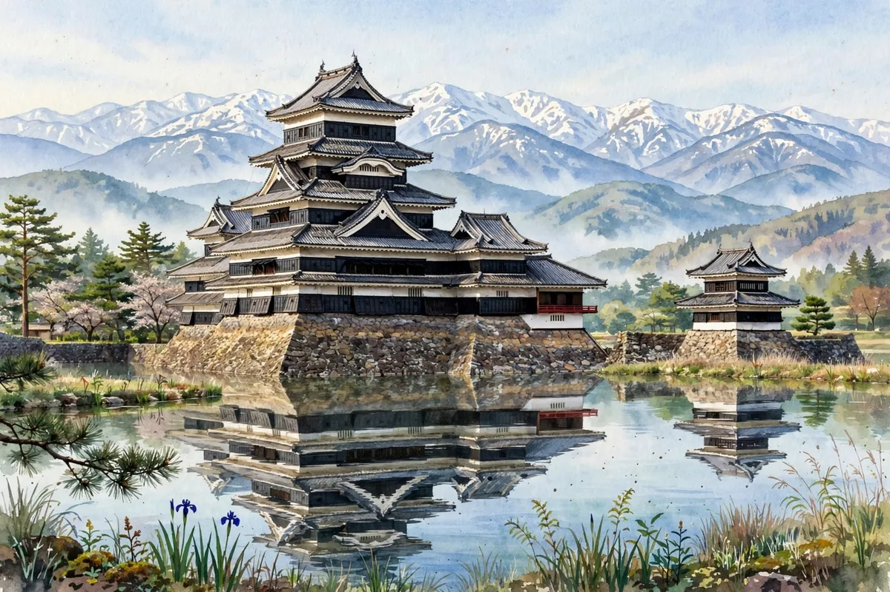

Matsumoto Castle Projection Mapping Opens December 12, with a 'Godzilla-0.0' Show in Phase Two

This is a news article bringing you the latest developments concerning castles and shrines. Source: a press release from Matsumoto City (November 20, 2026, via PR TIMES). The Matsumoto Castle Town Festa Organizing Committee (secretariat: Matsumoto City Tourism Brand Division) has announced 'Matsumoto Castle Projection Mapping 2026-2027,' a winter-only festival of light and sound on the national-treasure Matsumoto Castle, running for 65 days from Saturday, December 12, 2026, to Sunday, February 14, 2027.
【Two Phases, Two Shows — Phase Two Brings 'Godzilla-0.0'】The season is split into two phases, each projecting a completely different show of about 15 minutes onto the keep and the stone walls. Phase one runs from December 12 to January 14, 2027, under the theme of the winter festival 'Matsumoto Kacchin,' expressing 120 years of devotion to the castle and the warmth of Matsumoto's winter bustle in light. Phase two runs from January 15 to February 14, 2027, under the theme 'Creatures Connected to Matsumoto City': the dragon of the Izumi Kotaro legend, the tengu of the Tengu Falls in Nagawa, and the frog of Nawate Street come alive on the keep. Phase two also features a special collaboration with the film 'Godzilla-0.0,' directed by Takashi Yamazaki, a native of Matsumoto City. 'Godzilla-0.0' was just released on November 3.
【Clap the Hyoshigi and Conduct the Light — 65 Days, Free Admission】New this year, interactive installations are placed at four spots in Matsumoto Castle Park, letting visitors take part. Strike the wooden clappers ('hyoshigi') provided at the venue with a 'kacchin' and the surrounding light and images change dynamically in response. The show runs every day from 18:00 to 21:30, repeating a program of about 15 minutes (about 10 minutes of main video, about 3 minutes of interactive content, and about 2 minutes of illumination). Admission is free and no reservation is needed. Last season, about 130,000 people visited Matsumoto Castle Park at night during the run (December 13, 2025, to February 15, 2026).
【For Exam Study】For exam study, the key points are Matsumoto Castle's keep and how the castle has been cared for. Matsumoto Castle's keep is a national treasure, known as 'five stories, six floors' — five tiers from the outside, six floors inside. Since the major repairs of the Meiji and Showa eras, the city and its citizens have worked together for more than 120 years to repair the castle and restore its stone walls. Restoration of the south and west outer moats and seismic work on the keep are planned next. See also the related article 'Matsumoto Castle Week Brings a French Castle to Town: First Collaboration with Chambord for “Matsumoto Castle Day”.'
When visiting Matsumoto Castle, please check the latest information in the official tourism guidance of Matsumoto City. Our events calendar also lists the Matsumoto Castle Projection Mapping (December 12 to February 14, 2027).
A word from Tsurugi: Godzilla coming to Matsumoto Castle — what a surprise! And clapping the wooden clappers to change the lights sounds like great fun. Winter at Matsumoto Castle — I want to go and see it.
We also share castle and shrine news and exam updates on our official social media. Follow @tabi.kentei.jp on Instagram and Threads to keep up with the latest information.
Related article:Matsumoto Castle Week Brings a French Castle to Town: First Collaboration with Chambord for “Matsumoto Castle Day”
Recommended books for this article
Castle Guide
Samurai Castles: History / Architecture / Visitors' Guides
Hundreds of color photographs and close-up detail on Japan's most important surviving samurai castles — their history, design and military features, with guidance for visitors. The best single companion for castle sightseeing.
View at Barnes & NobleCheck the price at Barnes & Noble
Travel Guide
Lonely Planet Japan (Travel Guide), 19th Edition
Author: Lonely Planet
The standard Japan travel guide in its 19th edition — trip planning, itineraries, transport and on-the-ground detail. The practical backbone for a castle-and-shrine trip.
View at TargetCheck the price at Target
Book links on this page go to the retailers' product pages. Prices and availability are shown on the retailer's page.